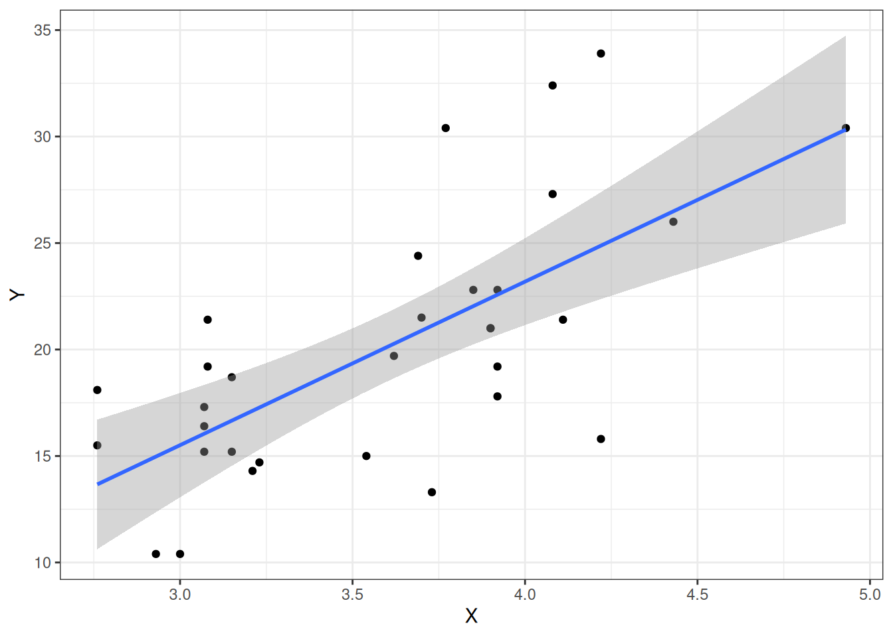

library(ggplot2)
kableExtra::kable(x = head(mtcars), format = "latex", caption = "Örnek veri setinden oluşturulmuş tablo")6 Bilimsel Yöntem
Veri biliminin temellerini anladıktan sonra bilimsel araştırma hakkında konuşabiliriz. Çünkü her veri, aslında bilimsel bir araştırmanın ürünüdür. Kamuya açık veriler kullanılarak yapılan araştırmalarda da bilimsel araştırma yöntemlerini kullanmalıyız.
Bu yüzden, temel bilimsl araştırma mantığını kavramalı, ve veri bilimi ile olan ilişkisini öğrenmeliyiz.
6.1 Bilimsel araştırmaya nasıl başlarız?
Karl Popper, Bilimsel Araştırmanın Mantığı isimli kitabının birinci Almanca baskısının önsözünde şöyle yazmıştır (Popper 1984):
Araştırma, deyim yerindeyse damdan düşer gibi başlar; çünkü düşecek bir “dam” vardır.
Damdan düşmek terimi bence güzel bir metafor; çünkü bilimsel araştırma aslında aklımıza takılan bir soruyla başlıyor. Bu soru oldukça sezgisel - ve kişisel deneyimlerimce - nasıl olduğunu anlamadığınız bir şekilde ortaya çıkıyor. Yani bir anlamda, hiç sebep yokken bir anda kendinizi çözmeniz gereken bir soruyla baş başa buluyorsunuz - yani damdan düşüyorsunuz.
Ancak, bilimde her şeyin bir kuralı olduğu gibi, damdan düşmenin de bir kuralı var. Biz buna bilimsel araştırma yöntemi diyoruz. Genel olarak aslında bilimin çalışma prensiplerinden bir tanesi de diyebiliriz.
Peki nasıl işliyor? Genel bir çerçeve çizmek gerekirse:
- Gözlem
- Gözlemlere dayanarak hipotez kurulması
- Deneysel metodoloji ve teorinin testi
- Deney sonucunda elde edilen bulguların tümevarmsal analizi
6.2 Gözlem
Yukarıdaki damdan düşme metaforunu ele alalım yine. Bu olay aslında uzun süreli bir gözlem sürecinin ardından bir anda ortaya çıkıyor. Yani ilk adım gözlem. Örnek verelim:
Kuğular üzerinde yaptığınız bir gözlem sonucunda, bütün kuğuların beyaz olduğunu gözlemlediniz. Bu gözlem size, dünya üzerindeki bütün kuğuların beyaz olduğunu düşünmenize sebep oldu.
6.3 Gözlemlere dayanarak hipotez oluşturulması
Gözlem sürecinin ardından, hipotez oluşturma süreci ortaya giriyor. Yine kuğu örneğinden gidersek, bu gözlem sonucunda şöyle bir hipotez oluşturdunuz: Dünya üzerindeki bütün kuğular beyazdır. Peki gerçekten öyle mi?
Artık üçüncü adımda geçmeye hazırsınız…
6.4 Teorinin deneysel yöntem ile test edilmesi
Artık bu teorinizle ilgili bir yönetm geliştirmeniz ve bu teoriniz test etmeniz gerkekir. Tabi kuğu örneği açısından bakarsak, yapmamız gereken şey aslında bir kuğu popülasyonu alarak, elinizdeki kuğuların renklerini tespit etmek. Peki burada sorulabilecek muhtemel bir soru:
Acaba dünya üzerindeki bütün kuğuları tek tek inceleyerek renklerini gözlemleyebilir misiniz?
Ne kadar geniş bir arama yaparsanız yapın, eninde sonunda gözünüzden kaçacak bir kuğu olacaktır. Burada bilimin bize sunduğu bir kolaylık ise, dünya üzerindeki kuğu popülasyonundan rastgele örneklem ile, küçük bir alt popülasyon oluşturmaktır.
Burada önemli olan anahtar kelimeler: örneklem ve rastgele olacaktır.
Örneklem olarak tanımladığımız şey esasında, büyük bir popülasyonu temsil eden küçük bir alt popülasyonu tarif edecektir. Peki neden rastgele olmalı? İstatistik biliminde rastgele tanımı gelen olarak, hiç bir yanlılık içermeyen, tamamen körlemesine yapılan iş olarak tanımlanabilir.
Rastgele örneklem: Geniş bir popülasyonu, yanlılık içermeden temsil eden alt popülasyon. Dolayısıyla, elde ettiğimiz alt popülasyondaki her bir örneğin bulunma frekansı, ana popülasyondaki örneklerin bulunma frekanslarına yakınsayacaktır. Bu sayede, rastgele örneklem kullanarak, daha büyük bir popülasyon hakkında yargılara varabiliriz - ya da varabileceğimizi düşünürüz.
Kuğu örneğine geri dönelim o zaman. Dünya üzerindeki geniş kuğu popülasyonundan rastgele bir örneklem almak isterseniz; her coğrafik bölgeden örnek aldığınıza emin olmalısınız. Mesela örnekleminizi sadece Türkiye içerisinden seçerseniz, bu yanlı bir örneklemi temsil eder. Ama popülasyonunuzu bütün ülkelerden almaya çalışırsanız, bu daha iyi bir örneklem olacaktır.
6.5 Bilimin temel prensiplerinden bir tanesi: Tümevarım
Peki bu rastgele örneklem ne işimize yarayacak? Elde ettiğimiz bu rastgele örneklem, aslında geniş kuğu popülasyonunu temsil ediyor - ya da biz şimdilik öyle kabul ediyoruz. Dolayısıyla, bu örneklem üzerinde yatpığımız deneyler sonucunda elde ettiğimzi bulguları, genel popülasyonu tanımlamak için kullanabilirz - ya da biz şimdilik öyle kabul ediyoruz.
Tümevarım (indüksiyon, induction) ilkesi: Özel bir önermeden, daha geniş bir sonucun çıkarılmasını tanımlaya felsefi bir ilke. Bilim özeline bu ilkeyi uygularsak, rastgele örneklem ile alınmış alt popülasyonumuzdan elde ettiğimiz önermeleri, büyük popülasyon hakkında bir yargıya varmak için kullanılması.
Yine kuğu popülasyonuna dönecek olursak; rastgele örneklem ile elde ettiğimiz alt popülasyonu incelediğimizi düşünelim. Bu örneklem içerisindeki kuğuların hepsi beyaz. O zaman tümevarım ilkesini kullanarak, dünya üzerindeki bütün kuğuların beyaz olduğu sonucuna varabiliriz.
Bu noktada bir dakika durun. Sizce bu sonuca varabilir miyiz?
6.6 Tümervarım sorunu
Dünya üzerinde bir tane siyah kuğu olduğunu düşünün. Eğer biz bu kuğuyu, rastgele örneklem içerisinde dahil etmede başarısız olursak; bütün tümavarım çıkarımımız çöker. Çünkü artık, dünya üzerindeki kuğulardan bir tanesinin siyah olduğunu biliyoruz.
Karl Popper, yine aynı kitabında bu sorun üzerine eğiliyor. Ne kadar iyi örneklem alırsak alalım, modern bilimin işleyişinde tümevarım ilkesini kullanmak her zaman doğru sonuçlara varacağmızı garanti etmez.
6.7 Yanlışlanabilirlik ilkesi
Dolayısıyla, modern bilim genel olarak yanlışlanabilirlik ilkesine göre çalışır. Bu ilkeye göre, tümevarımsal çıkarımlarımız aslında belirli bir olasılık düzeyine göre doğru kabul edilir (p-değeri) ve yanlışlanana kadar doğrudur.
Yine kuğu örneğine geri dönecek olursa, bütün kuğular beyaz olarak kabul edilirken, 1967 yılında Hollanda’da bir tane siyah kuğu keşfedilmiştir. Dolayısıyla artık bütün kuğular beyaz olmadığı gösterilmiştir.
Yanlışlanabilirlik ilkesine göre tümevarım çıkımları, yanlışlanana kadar doğru kabul edilir.
7 Veri bilimi bu işin neresinde?
Peki bu yazılanların derslerimizle olan ilgisi nedir? Geleneksel bilimsel yöntemin işleyişi genel olarak bir önceki kısımlarda yazdığımız güzergah üzerinde hareket etmektedi. Bu da genel olarka doğa gözlemlerine dayanır.
Örnek vermek gerekirse; antik çağ filozofoları, gözlem yeteneklerini sadece gözlem yeteneklerini kullanarak hipotezler gerliştimiş ve dünyayı kavramamızı sağlamıştır.
Ancak, yaşam bilimlerinde yaşanan hızlı gelişme artık karşımıza farklı bir paradigma çıkarmıştır: Veri üzerinden gözlem
Bir önceki dönem Moleküler Biyoloji dersinde yaşamsal bilginin hem nasıl sonraki nesillere hem de aynı zamanda hücre içerisinde aktarıldığını gördük. Bu yaşamsal bilgi aslında sahip oldumuz bütün fenotipten sorumlu. Dolayısıyla, sahip olduğumuz fenotipik özelliklerin bir çoğunun (epigenetik özellikler dışında) kaynağı DNA.
Fenotip: Bir canlılnın sahip olduğu genetik bilginin, anlatıma uğrayarak işlevsel hale gelmiş halidir. Mesela göz rengimizden sorumlu gen bölgesi anlatıma uğradığında, göz rengi fenotipi oluşur.
7.1 Son yıllarda veri artışı var
Yeni nesil dizileme teknolojileri, güncel veri miktarını her gün kat be kat arttırıyır. DNA dizi verisi gene olarka veri tabanlarında tutuluyor. En güncel NCBI SRA veri tabanına baktığımızda bu artışın hızını anlayabiliriz (Şekil @ref(fig:sra))
Bu veri miktarı bize yeni artık doğa yerine, veri üzerinden yeni gözlemler yapabilmemize olanak sağlıyor.
7.2 Peki veri bilimi nasıl işliyor?
Geleneksel yöntemin aksine, artık çıkış noktamız veri. Örnek vermek gerekirse DNA, RNA dizi verisi sıklıkla kullanılan yaşam bilimi verilerindendir. Peki süreç nasıl işliyor? Şöyle özetleyebiliriz:
- Verinin elde edilmesi
- Veri üzerinde incelemeler ve modelleme çalışmaları yapılması
- Oluşturulan modellerin, benzer veri üzerinde test edilmesi
DNA veya RNA dizi versinin nasıl elde edileceğini gelecek sene Biyoinformatik dersinde daha ayrıntılı bir şekilde işleyeceğiz. Dolayısıyla, şimdilik daha çok ikinci nokta üzerinde duracağız.
7.2.1 Verinin incelemesi ve modelleme çalışmaları
Bu amaçla R ve Rstudio platformlarını kullancağız. Bu platformlar bize veri analizi, görselleştirmesi ve modellenmesi konusunda harika imkanlar sağlıyor.
İlk adımda R içerisindeki veri yapılarını öğreneceğiz. Daha sonra R içerisine veriler yükleyerek, tablolar ve grafikler oluşturacağız. Örnek vermek gerekirse, Tablo @ref(tab:mtcarstb)’da R içerisinde gelen örnek veri setlerinden bir tanesinin tablo haline getirilmiş hali mevcut.
Bu noktadan sonra amacımız, verinin sakladığı hikayeleri incelemek ve bu hikayeleri tanımlayan modeller oluşturmak olacak. Eğer Şekil @ref(fig:mtcars)’e bakarsanız, örnek veri setindeki iki farklı değişken kullanılarak oluşturulmuş bir modeli görebilirsiniz.
Eğer matematiksel bir notasyon kullanmak istersek, şekilde görülen çizgiyi aslında şu şekilde ifade edebiliriz:
\[ Y = f(X) + \epsilon \]
ggplot(data=mtcars, aes(x=drat, y=mpg)) + geom_point() +
xlab("X") + ylab("Y") + geom_smooth(method = "lm") + theme_bw()
Tabi, şu anda aklınız karışmış olabilir. Ancak ilerleyen haftalarda aşağıdaki konular üzerinden giderek R ve Rstüdyo programlarını kullanarak veri bilimine giriş yapacağız:
- R ve RStüdyo kurulumu
- R üzerinde bulunan temel veri yapıları
- Veri çerçevleri, matrisler, listeler
- Tanımlayıcı istatistikler
- Temel istatistik analizler
- GGplot2 ile görlselleştirme
- Doğrusal modeller